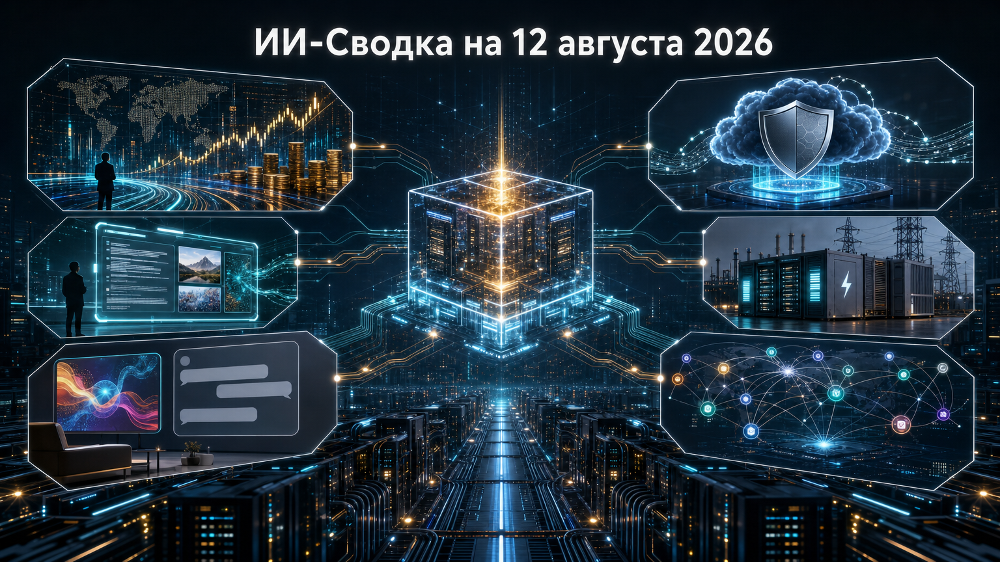

Новостей сегодня меньше, чем обычно
В центре выпуска — переход ИИ-инфраструктуры к всё более крупным финансовым и энергетическим контрактам. Одновременно разработчики расширяют каналы распространения моделей: от специализированных киберсервисов в облаке до локальных открытых моделей и компонентов для поиска.
Отдельный потребительский сигнал — расширение рекламного теста ChatGPT сразу на пять рынков. Это показывает, что монетизация массовых ИИ-ассистентов становится частью международной продуктовой стратегии, а не только американским экспериментом.
Reuters сообщил о партнёрстве Nvidia с Apollo, BlackRock, Blackstone, Brookfield, Goldman Sachs и KKR. Его цель — создать финансовые платформы для ИИ-вычислительной инфраструктуры и мобилизовать более 500 млрд долларов стороннего капитала.
Это важный сигнал о смене модели финансирования: строительство дата-центров всё сильнее выходит за пределы балансов отдельных технологических компаний. При этом из доступных данных неясны юридическая конструкция платформ, обязательность заявленного объёма капитала и конкретные проекты, поэтому сумму следует воспринимать как целевой ориентир партнёрства, а не как уже профинансированные мощности.
OpenAI сообщила, что уровни доступа Daybreak Blue и Daybreak Red стали доступны подходящим участникам программы через Amazon Bedrock. Как указано в анонсе OpenAI, Blue предоставляет frontier-модели, включая GPT-5.6 Sol, для оборонительных киберзадач с защитными мерами, а Red предназначен для авторизованных исследований уязвимостей, проверки эксплойтов и security-тестирования.
Это существенное продолжение анонса Daybreak из предыдущего выпуска: программа получает новый корпоративный канал развёртывания в AWS. Публикация не раскрывает число клиентов, географию доступности и коммерческие условия, поэтому пока нельзя оценить фактический масштаб использования моделей через Bedrock.
Bloomberg со ссылкой на знакомых с вопросом лиц сообщил, что Anthropic заключила с Riot Platforms соглашение на 9,1 млрд долларов. Riot, ранее известная как майнинговая компания, развивает мощности ИИ-дата-центров; соглашение должно обеспечить Anthropic вычислительными ресурсами для обслуживания спроса на Claude.
Сделка иллюстрирует, как рынок ИИ-инфраструктуры привлекает операторов с доступом к площадкам и энергомощностям за пределами традиционных гиперскейлеров. Однако стороны на момент публикации не представили совместного официального релиза, а подробные условия, сроки поставки мощности и её объём в доступном материале не раскрыты.
Профильное издание MarkTechPost сообщило о выпуске Meta модели Muse Glimmer с открытыми весами по лицензии Apache 2.0. По данным публикации, это мультимодальная модель примерно на 30 млрд параметров, рассчитанная на агентные сценарии и локальный запуск; также упоминаются 4-битные квантизованные сборки для потребительских GPU.
Если заявленные параметры и доступность весов подтвердятся в первичных материалах, релиз может быть заметен для команд, которым нужны приватные или on-premise агентные системы с обработкой текста и изображений. В проверенном пуле официальный анонс и репозиторий весов не были открыты напрямую, поэтому характеристики, лицензию и заявления о запуске на одной GPU следует рассматривать как сведения из технической публикации, а не независимый бенчмарк.
OpenAI обновила страницу рекламного эксперимента: согласно сообщению компании, 11 августа реклама в ChatGPT появилась в Великобритании, Мексике, Бразилии, Японии и Южной Корее. Компания планирует продолжать расширение программы в других странах в течение года.
Для рынка это шаг к более широкой международной монетизации массового ИИ-ассистента. OpenAI заявляет, что реклама визуально отделяется от ответов, а рекламодатели не получают чаты, историю, memories или персональные данные пользователей; при этом компания не раскрывает охват, рекламные форматы и влияние теста на пользовательский опыт.
В журнале релизов QwenCloud от 11 августа появилась Qwen3.7-Text-Embedding — модель эмбеддингов на базе Qwen3.7 для поиска, кластеризации и классификации. Документация заявляет улучшения для многоязычного, китайско-английского и code retrieval по сравнению с text-embedding-v4.
Это специализированный, а не frontier-релиз, но он важен для разработчиков RAG-систем, корпоративного поиска и каталогов кода: эмбеддинги определяют качество извлечения контекста до обращения к LLM. Модель поддерживает настраиваемую размерность векторов от 256 до 2560, однако независимые сравнения качества и сведения о лицензии в проверенном источнике не приведены.
*Meta и ее сервисы - в России запрещены